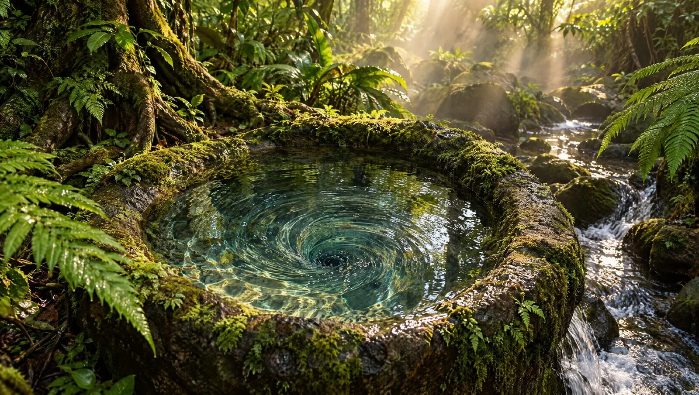
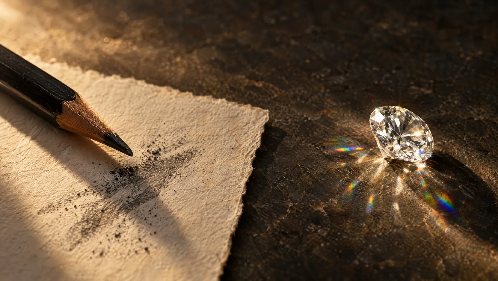
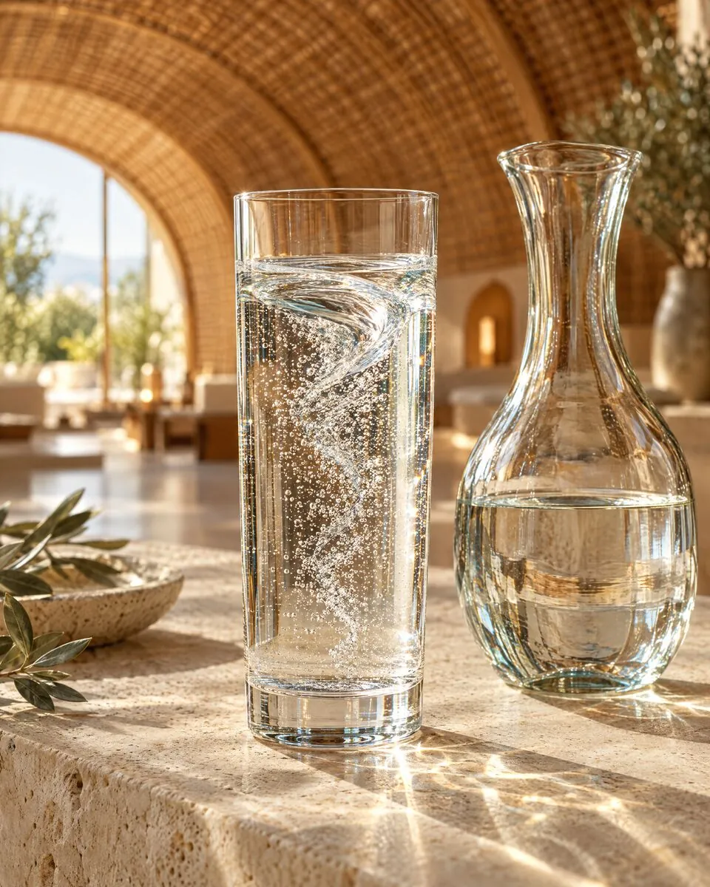

Clean is only the beginning. At MILUJ we look at what water is made of, how its molecules are ordered, how it moves, and what it can carry into the body.
More than half of you, all your life. About two thirds of that water lives inside your cells; the rest flows between tissues and in your blood.
Typical values: up to 75 % at birth, about 58 ± 8 % in adult men and 48 ± 6 % in adult women; the share falls slowly with age.
Chemistry tells you what water is made of. Structure tells you how it is arranged, and arrangement can change everything.

In a pencil, carbon atoms form flat hexagonal sheets stacked loosely on top of each other. The sheets slide apart at a touch, which is why graphite is soft enough to write with.
Hardness 1–2 on the Mohs scaleRearrange exactly the same atoms into a rigid three-dimensional lattice, each one bonded to four neighbours, and carbon becomes the hardest natural material on Earth, clear and brilliant.
Hardness 10 on the Mohs scaleLiquid water is held together by hydrogen bonds that break and re-form trillions of times every second. Its order is fleeting, shaped by temperature, movement, minerals and the surfaces it touches.
Each hydrogen bond lasts about a trillionth of a secondNext to water-loving surfaces, such as the membranes and proteins inside our cells, water can line up in ordered, hexagonal layers. Researcher Gerald Pollack calls this the exclusion zone, or EZ water, and describes it as a fourth phase of water. Other scientists explain his observations differently; the question is open and actively studied.
Reported EZ layers: up to hundreds of microns thickPurity tells you what is missing from water. Structure asks how what remains is ordered.
MILUJ therefore starts with clean, mineral-balanced water and then pays attention to its order: how it is moved, cooled and kept, so that the water you drink resembles the water of a living spring more than the water of a straight pipe.
Inspiration · Viktor Schauberger
Viktor Schauberger (1885–1958) was an Austrian forester who spent his life watching water in wild mountain streams. Healthy water, he observed, rarely runs straight: it spirals, cools and gathers itself in vortices.
In 1922 he built timber flumes that followed this natural movement and cut the cost of floating logs to a tenth. His patents from 1926 onwards, and his book Implosion statt Explosion (1955), turned the same observation into a principle: inward, spiralling movement builds order, outward explosive force wears it down.
Schauberger called water forced through straight pipes and stripped of its movement “dead”, and water allowed to swirl, cool and breathe “living”. In this view water is not just a liquid but a carrier of energy: water that has lost its order asks the body to do the ordering. This is the idea MILUJ builds on, and the one it sets out to measure.
What water can carry
Molecular hydrogen (H₂) is the smallest molecule there is. Research is exploring its role in oxidative signalling, metabolism and recovery; the field is promising, and still developing. Its practical problem is simple: H₂ escapes from water quickly once a bottle is opened.
The “up to 24 hours” figure is a supplier-stated target for the patented retention system. The conventional curve is illustrative; real H₂ loss depends on concentration, container, temperature and handling. MILUJ intends to verify both profiles independently before presenting them as measured results.

The MILUJ water
Order and carrier in one glass: structured, mineral-balanced water, saturated with molecular hydrogen and kept stable by a patented retention system.
Filtered and mineral-balanced: nothing in the water that should not be there.
Prepared through vortex movement in the spirit of Schauberger, to restore the order of a living spring.
Molecular hydrogen dissolved and held for hours instead of minutes, so it is still there when you drink it.
How we will check it. Guests often describe water like this as softer and easier to drink. MILUJ will document what it does with validated measurements and independent testing before claiming more.
Fascia · the water-rich living network
Fascia is the continuous connective-tissue network that wraps, links and supports structures throughout the body. Its extracellular environment includes water-binding molecules such as hyaluronan.
Hydration is therefore not only about thirst. It supports the normal environment in which tissues glide, transmit force and move.
We do not claim that a specific water type reverses ageing, removes toxins or directly treats disease.
Water is the medium for every process inside and between our cells, and normal hydration is essential to human function. Molecular structure changes the properties of matter, as carbon shows.
Molecular hydrogen is being studied for effects on oxidative signalling and cellular processes; clinical evidence is still developing. Ordered water near surfaces (EZ water) is reported and debated.
Living, structured water in Schauberger’s sense, and hydrogen held stable for hours, are what MILUJ sets out to document, measure and have validated independently.
Change the environment, and the body can respond.
Return to the full MILUJ vision →